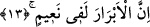
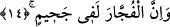

hafif olan melekler kimbilir neler yaparlar?
13. İyiler şüphesiz nimet içindedirler.
Farzları eda ederek, mâsiyetlerden kaçınarak îmanlarına sadakat gösteren “iyiler
şüphesiz nimet içindedirler.” Âyette yer alan “ebrar”, sadık, itâatkâr, iyilik yapan
anlamına “berr” kelimesinin çoğuludur. Hasenatın en güzeli “la ilahe illallah” sözüdür.
Sonra sırasıyla anne-babaya, talebelerin hocalarına, müridlerin şeyhlerine iyiliği gelir.
Nitekim Fethu’r-Rahman’da böyle ifâde olunur. Ebrar’dan olan kimse genel olarak
herkese düzenli biçimde iyilik eden kimsedir. Kişinin Rabbine iyiliği ve itâatı ona olan
itâatında; insanlara olan iyiliği ise onlara sağladığı iyilik ve hayırdadır. Bir hadis-i
şerifte şöyle buyurulur: “Âyette işâret edilen ebrar (iyiler), evlatlarına iyilik ettikleri
gibi anne ve babalarına iyilik eden kimselerdir. Bunların içerisinde bulunacak
oldukları nimet Cennet nimeti ve sevabıdır.” [43] Nimet kelimesinin sonundaki tenvin o
nimetin büyüklüğüne dikkat çeken, ta’zim ifâde eden tenvindir.
14. Kötüler de Cehennemdedirler.
Kötüler anlamına gelen “”el-füccâr”, “fâcir” kelimesinin çoğuludur. Bunların
yaptıkları işe “fücûr” denir. Fücur, din perdesini yırtmak anlamına gelir. İşte bunlar
Cehennemde ve onun azabı içindedirler. Cehennem anlamına gelen “cahîm” kelimesinin
sonundaki tenvin, Cehennemin korkunçluğunu ifâde etmek için getirilmiştir. Bu son iki
cümle, amelleri yazıp kayda geçiren meleklerin bunu niye yaptıklarını beyân eden
cümledir. Demek ki meleklerin amelleri yazmasından gaye ya Cennettir, nimettir ya da
Cehennemdir.
Bu âyet-i kerimede zikir, taat, mârifet, şühûd, huzûr ve visal naîmine; ayrıca gaflet,
mâsiyet, cehalet, ihticab, ğaybûbet ve firak cahîmine işâret vardır.
Havvas (rh.) der ki: Ondan geldiği sürece nimet ne hoştur. Onun sâyesinde olduğu
sürece cahîm de ne hoştur. Mesnevi’de Mevlana şöyle der:
Sultanımız nereyi mesken tutarsa,
İğne deliği kadar da olsa ovadır.
Ay gibi Yusuf ’un bulunduğu yer
Kuyunun dibi bile olsa Cennettir.